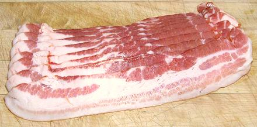
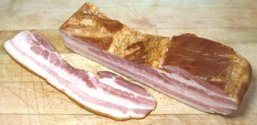
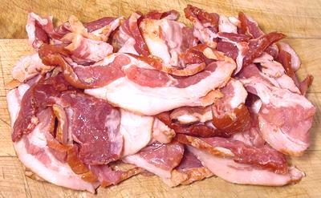

Bacon - Streaky Bacon

When we say just "bacon" in the United States, this sliced product is
what we mean. It is pork belly, salt cured, smoked and sliced. It may
be "thick sliced" or "regular", but even thick sliced is rather thin.
In my opinion, it's too thin for many recipe uses. On the other hand,
sliced is essential for a lot of other recipes - though I'd generally
still recommend the "thick sliced". Typically, slices are 10-1/2
inches long, 2 inches wide and 0.12 inch thick (thick sliced).
Flavor, thickness and leanness vary considerably with brand, so
find one you like.
More on Pork Products.
Slab Bacon

This is simply regular bacon before slicing. It's generally a deli product
of special quality and somewhat higher price. The photo specimen was
purchased from the deli department of a large multi-ethnic market in Los
Angeles for US $6.19 / pound, compared to the regular specimen above
purchased from a discount market at $4.65 / pound. It was 8 inches long
and 2 inches thick at the thick end.
More on Pork Products.
Ends and Pieces

Unfortunately, pigs are not perfectly rectangular, so producing those
trays of thin uniform slices involves a lot of trimming at the edges.
These trimmings are packaged and sold through some markets. They tend
to be sliced a lot thicker and usually are leaner than sliced bacon.
This is the way I buy nearly all my bacon, because I use it mostly in
recipes where sliced is really too thin. I buy Bar-M brand (produced by
Serve-Rite Meat Co in Los Angeles) which has excellent smoky flavor.
More on Pork Products.
Buying:
In the United States (and much of Canada), sliced
bacon will be found in just about any market that sells any meat at all.
Slab bacon will be found in the deli department of most markets that
have a full service deli. Ends and pieces will be found in many markets
that sell meat, but by no means all. Quality varies by manufacturer.
Storage:
Vacuum packed bacon will keep a month at least.
Once opened it will probably start to mold within a week or so, sooner
if not wrapped air tight. If there's just a little blue-green mold, it
can be scraped off. If it's orange mold, discard the bacon.
Prep:
Cut to the size you want.
Cooking:
Sliced bacon is generally fried, preferably in
a little bacon fat or lard. For best flavor it should be fried only
partially crisp. Fast food outfits fry theirs all crisp because it is
then eternal like cardboard and easy to handle, but it tastes kind of
like cardboard too.
Subst:
Bacon is the only real substitute for bacon, but
in some recipes where it doesn't play a major roll, Canadian bacon or ham
can be used. If you're Muslim or an observant Jew, your best bet is
conversion to a different religion.
ap_baconz 120808 - www.clovegarden.com
©Andrew Grygus - info@clovegarden.com - Photos on this
page not otherwise credited © cg1 -
Linking to and non-commercial use of this page permitted